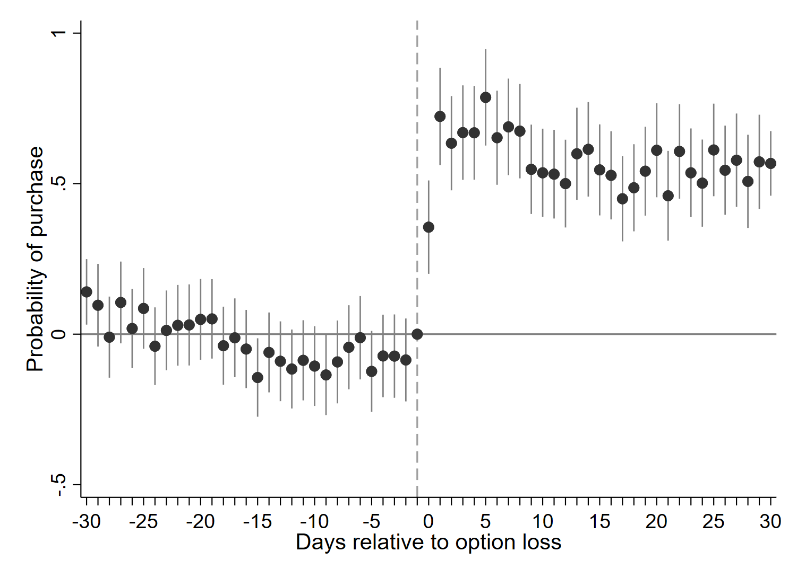
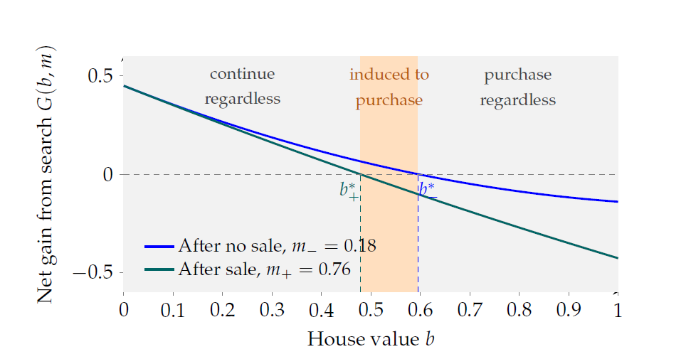

<!doctype html>
<html lang="en">
  <head>
    <meta charset="utf-8">
    <meta name="viewport" content="width=device-width, initial-scale=1">
    <title>Research | Ning Jia</title>
    <link rel="stylesheet" href="style.css">
  </head>
  <body>
    <div class="wrapper">
      <nav aria-label="Main navigation">
        <ul>
          <li><a href="index.html">Home</a></li>
          <li><a href="CV.pdf">CV</a></li>
          <li><a href="research.html">Research</a></li>
          <li><a href="teaching.html">Teaching</a></li>
        </ul>
      </nav>
      <hr>

      <main>
        <h1>Research</h1>

        <h2>Job Market Paper</h2>
        <div class="job-market">
          <div class="job-market-layout">
            <div>
                      <p class="paper-title">
          <a href="assets/Option Loss and Transaction Cascades.pdf" target="_blank">
            Option Loss and Transaction Cascades in the Housing Market
            </a>
        </p>
              <p class="muted">with Ruiyu Zhu</p>
          <details class="abstract">
          <summary>Abstract</summary>
          <p>
             In booming housing markets, transactions may generate their own momentum as property sales create urgency among other buyers. To rationalize this mechanism, we develop a dynamic sequential search model in which property sales signal tighter market conditions and generate transaction cascades. Using data from a major Chinese housing platform, we exploit the quasi-random timing of sales of previously visited properties to identify option-loss shocks. We find that option loss increases buyers' purchase probability by 67%, whereas sales of similar but unvisited properties have little effect, highlighting the importance of inclusion in the buyer's choice set. Consistent with the mechanism, the effect is stronger in tighter markets and among buyers with larger choice sets. A back-of-the-envelope calculation suggests that these cascades account for about 30% of market-level transaction activity. Option loss also reduces subsequent search, broadens search criteria, and is associated with higher transaction prices. Our findings identify option loss as a micro-level mechanism through which individual transactions trigger further transactions and amplify housing market activity.
        </p>
            </div>
             <p class="muted">Presentation: 2nd Zurich–Oxford Doctoral Symposium on Real Estate Markets,  2026 SMU-Jinan Conference on Urban and Regional Economics (planned), 2026 European Winter Meeting of the Econometric Society (planned). </p>
            <figure style="display: flex; gap: 12px;">
  

  
</figure>
          </div>
        </div>

        <h2>Working Papers</h2>
        <div class="paper">
          <p class="paper-title">
          <a href="assets/BTL.pdf" target="_blank">
            Borrowing Constraints and the Rise of the Private Rental Sector
            </a>
        </p>
          <p class="muted">with Jan Rouwendal and Florian Sniekers</p>
          <details class="abstract">
          <summary>Abstract</summary>
          <p>
            Borrowing constraints may prevent individual households from buying a home, but do they also reduce the homeownership rate and expand the private rental sector? 
            We develop an empirical strategy that accounts for equilibrium spillovers, based on an assignment model in which investors convert owner-occupied homes into rentals for credit-constrained households. 
            This framework identifies both constrained households and those affected by investment spillovers, allowing quasi-experimental evidence to be interpreted as aggregate effects. Applying the method to Dutch mortgage policy tightenings from 2012 to 2016, we find that borrowing constraints 
            significantly expanded the private rental sector, accounting for up to 75% of its growth through 2017. Our findings imply that borrowing constraints play a central role in shaping tenure outcomes and 
            housing market composition.
        </p>
      </details>
          <p class="muted">
            Presented at UEA North American 2021, UEA European 2023, EEA-ESEM 2023, ECHOPPE 2023, IAAE 2024,
            AREUEA International 2024, Federal Reserve Bank of San Francisco 2024, ReCapNet 2024, SMU-Jinan 2024, Zurich-Bern Workshop 2025, ESWC 2025, and AREUEA-ASSA 2026.
          </p>
        </div>

          <div class="paper">
          <p class="paper-title">
          <a href="assets/Congestion.pdf" target="_blank">
            New Listings and Housing Market Congestion
            </a>
        </p>
          <details class="abstract">
          <summary>Abstract</summary>
          <p>
          This paper studies how new listings affect properties already on the market through the housing search process. I develop a sequential-search model that generates a stock--flow matching pattern and predictions about how congestion varies with entrant characteristics and incumbent listing age. Using detailed micro-level data, I find that a new listing reduces incumbent buyer visits by 15--18% and weekly sale probability by 11--14%, with little effect on list or sale prices. Consistent with the model, congestion is stronger for more price-competitive entrants and recently listed incumbents, and is also larger when properties are closer substitutes and local markets are smaller. The findings support a search-based mechanism in which new listings reshape buyers' search orderings and redistribute matching opportunities across sellers, primarily through the liquidity rather than the price margin.  
          </p>
          </details>
          <p class="muted">Presented at UEA European 2025 and AREUEA International Conference 2025.</p>
        </div>


                <div class="paper">
          <p class="paper-title">List Prices in Segmented Housing Markets</p>
          <p class="muted">with Jan Rouwendal and Florian Sniekers</p>
          <details class="abstract">
          <summary>Abstract</summary>
          <p>
            We study the role of list prices in frictional and segmented housing markets. 
            Using data from a large online housing platform in Beijing, where buyers state their preferred ranges for prices and housing characteristics, we show that list prices position listings into different buyer segments. 
            Exploiting list price revisions in a difference-in-differences design, we find that both downward and upward revisions attract buyers from other segments. 
            Downward revisions increase visitor flows persistently, leading to faster sales at lower prices, while upward revisions generate short-lived interest, higher sale probability, and higher transaction prices. 
            We develop a search model with segmentation and time-consuming inspections that rationalizes these patterns and explains under what conditions sellers may  want to change their list price.
          </p>
          </details>
          <p class="muted">
            Presented at UEA North American 2024, Chinese Summer Meeting in Urban
            Economics 2024, BVRN Workshop 2025, UEA European 2026,  EEA-ESEM 2026, De Nederlandse Economendag 2026 (planned), AREUEA-ASSA 2027 (planned).
          </p>
        </div>


          <div class="paper">
          <p class="paper-title">
          <a href="assets/IPO.pdf" target="_blank">
            Initial Public Offerings and Local Entrepreneurship: Evidence from China (Under Review)
            </a>
          <p class="muted">with Ge Yang</p>
          <details class="abstract">
          <summary>Abstract</summary>
          <p>
            This paper examines how a county’s first IPO affects local entrepreneurial activity in China. 
            Using a county-level panel spanning 1990–2022 and a staggered difference-in-differences design, we find that a county’s first IPO reduces both new firm registrations and the stock of active firms by 
            approximately 8%, while having no significant effect on firm exit. The decline in entry is concentrated among private firms and firms operating in the same industry as the IPO firm. 
            Moreover, the effect is stronger following IPOs by firms with larger employment, but does not vary with either their capital or local access to finance, pointing to labor market reallocation as the primary mechanism.
            Consistent with this interpretation, the negative effect is more pronounced for state-owned enterprise IPOs and in less-developed regions, where competition for local labor is likely to be stronger. 
            These findings show that IPOs can crowd out, rather than stimulate, local entrepreneurial activity, highlighting an important local resource reallocation effect of public listings.
        </p>
      </details>
        </div>

        <h2>Pre-doc Publication</h2>
        <p class="paper-title">The Causes and Consequences of China's Municipal Amalgamations: Evidence from Population Redistribution</p>
        <p>Ning Jia and Huiyong Zhong. <em>China &amp; World Economy</em>, 30, 174-200, 2021.</p>

        <h2>Research Experience</h2>
        <ul>
          <li>Research Assistant for Ming Lu, 2018-2020.</li>
          <li>Research Assistant for Hans R.A. Koster, 2025-2026.</li>
        </ul>

<h2>Presentations</h2> 

<ul class="presentation-list"> 
  <li><span class="year">2027</span><span>AREUEA-ASSA Conference, Washington D.C. (planned).</span></li> 
  
  <li><span class="year">2026</span><span>AREUEA-ASSA Conference, Philadelphia; UEA European Meeting, Barcelona*; EEA-ESEM, Dublin; Zurich-Oxford Doctoral Symposium on Real Estate Markets; De Nederlandse Economendag 2026* 2026 European Winter Meeting of the Econometric Society (planned), 2026 SMU-Jinan Conference on Urban and Regional Economics (planned).</span></li> 
  
  <li><span class="year">2025</span><span>UEA European Meeting, Berlin; BVRN Workshop, Amsterdam; AREUEA International Conference, Barcelona; Zurich-Bern Real Estate Finance and Economics Workshop, Zurich; Econometric Society World Congress, Seoul.</span></li> 
  
  <li><span class="year">2024</span><span>UEA North American Meeting, Washington D.C.; UEA Summer School, Geneva; IAAE Annual Conference, Xiamen; ReCapNet Conference, Stockholm; Federal Reserve Bank of San Francisco*.</span></li> 
  
  <li><span class="year">2021</span><span>CEA Forum (Online); CCER SI, Beijing; Seminar CUFE, Beijing.</span></li> 
</ul> 

<p class="muted" style="font-size: 0.9em;">
  * Presented by co-author
</p>

</main>
      </main>

      <footer>© Ning Jia 2026</footer>
    </div>
  </body>
</html>
